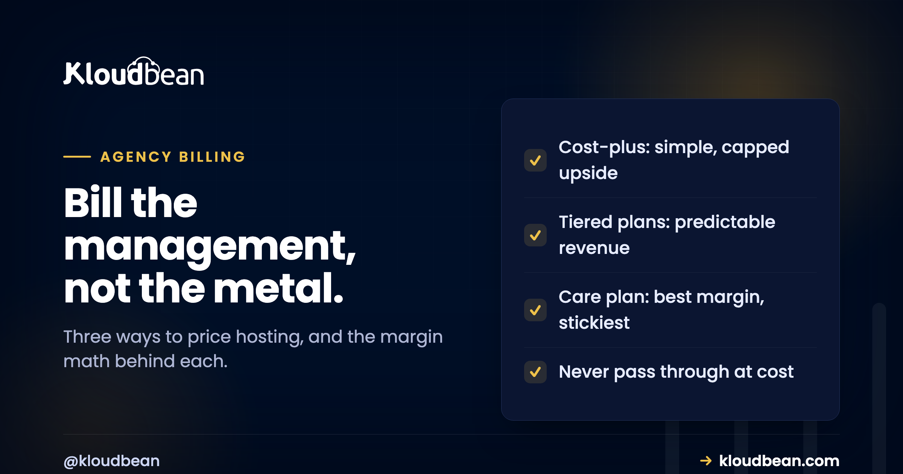

Client Billing and Markup for Hosting: Stop Passing It Through at Cost

Ask ten agencies how they bill clients for hosting and you'll get ten answers, and at least six of them are leaving money on the table. Some pass the hosting bill through at cost, proud of the transparency, and quietly do hours of unpaid management around it. Some bury it so deep in a project fee the client never sees a number they'd have happily paid every month. The framing that fixes both: the server is a commodity anyone can buy, but keeping a client's site fast, patched, backed up and online is a service, and a service is what you bill for. This is how to price it without guessing.
Charge for the management, not the metal. Pick one of three models: cost-plus (mark the underlying hosting up by a set multiple), flat tiered plans (bronze/silver/gold at fixed monthly prices), or value-based (fold hosting into a monthly care plan that also covers updates, backups, and support). Most agencies do best with tiered or care-plan pricing, because it bills the value the client actually receives rather than the commodity. Whatever you choose, you need a predictable underlying cost, because you cannot safely quote a client a flat monthly price on top of a bill that surprises you. And the things that justify your margin are real: monitoring, backups you have tested, updates, a response commitment, and security.
The mistake: billing the commodity, giving away the value
Two failure modes, and most agencies are in one of them.
Pass-through at cost. You show the client the raw hosting invoice and add nothing, because it feels honest. The problem is that you then absorb all the real work, the updates, the monitoring, the 9pm "the site's down" call, into your general overhead where it is invisible and unpaid. You have billed for the one part with no value (the server, which the client could have rented themselves) and given away the part with all the value (that you keep it running). Worse, you have trained the client to see hosting as a line item to shop around, so the day a cheaper number appears they wonder why they pay you at all.
Invisible bundling. The opposite error: hosting disappears into a project fee or a vague "maintenance" line, so the client never sees that they are getting managed hosting worth paying for. You may be doing the work and even charging enough, but the client cannot attribute the value, so at renewal it looks like a mystery cost rather than a service. Recurring revenue you cannot name is recurring revenue you cannot defend.
Both are solved by the same move: make the management a named thing with a price, then choose how to package it.
Three pricing models, and when each fits
There is no single right answer, but there are three real options and clear cases for each.
| Model | How it works | Best when | Watch out for |
|---|---|---|---|
| Cost-plus markup | Take the underlying hosting cost, multiply by a set factor | You want simple, defensible math and clients who expect itemisation | Anchors the price to the commodity; caps your upside at a multiple of a cheap number |
| Flat tiered plans | Bronze / silver / gold at fixed monthly prices, each with defined limits and support | You have several similar clients and want predictable recurring revenue | Tiers must map to real cost bands or a heavy client erodes a tier's margin |
| Value-based / care plan | Hosting folded into a monthly plan that also covers updates, backups, support, small changes | You want the highest margin and the stickiest relationship | You must actually deliver the plan's promises, or it becomes a liability |
The trend as agencies mature is left-to-right on that table. Cost-plus is where people start because it is easy to justify. Tiered plans arrive when you have enough clients to see patterns. The care plan is where the best margins live, because the client is no longer buying hosting at all, they are buying "my site is somebody's job", and that is worth far more than a marked-up server. The white-label hosting guide covers presenting it under your own brand, and WordPress maintenance retainer plans is the care-plan model as a product.
The margin math, with honest example numbers
Numbers make this concrete. Everything below is an illustrative example to show the mechanics, not a Kloudbean price list; plug in your own real costs.
Say your true underlying cost to host and manage a small business site works out to a base figure per client per month once a server is shared across several of them. Under the three models:
Illustrative only. Replace with your real numbers.
Underlying cost per client (shared server, allocated): ~ base
Cost-plus (3x): price = base x 3 margin = 2x base
Tiered "silver": price = flat monthly margin = flat - base
Care plan: price = flat + updates + support + backups
margin = plan price - (base + your hours)The insight the math surfaces is about consolidation. If every client sits in their own separate hosting account, your cost base is high and largely fixed per client, so your margin is thin no matter how you price. If many clients share one managed account and one or a few servers, your per-client cost falls, and the same client price now carries real margin. This is why "how you host" and "how you bill" are the same conversation: hosting twenty client apps on one managed account is what makes the billing math work. One account, many walled-off clients, one bill you understand.
A note on the care plan's math: its margin looks smaller per line because it includes your hours, but it is the most durable, because the client is paying for an outcome they can feel rather than a resource they could re-price. Durable beats large.
What you are actually billing for
If a client ever asks "why am I paying you for hosting when I could get a server for less", this is the answer, and you should be able to give it without hesitating. You are billing for the work that turns a server into a service:
- Monitoring, so a problem is noticed by you before it is noticed by the client's customers.
- Backups you have actually tested, so a bad day is a restore rather than a catastrophe. An untested backup is not a backup, which is the whole point of the backups guide.
- Updates and patching, so the site does not rot into a security incident between projects.
- A response commitment, so when something breaks the client knows who answers and how fast.
- Security posture, the firewall, SSL, and access control the client will never think about until it fails.
None of that is the server. All of it is the reason a client keeps paying you and not a commodity host. Name these in your plan and the price defends itself.
You cannot mark up a bill you cannot predict
Here is the operational constraint most pricing advice ignores, and it decides whether a flat price is safe.
Every model above except raw pass-through asks you to quote the client a fixed monthly number. That is only safe if your own underlying cost is predictable. If the platform beneath you bills by metered usage with spikes you cannot foresee, then a flat client price is a bet: some months you win, and some month a traffic spike or an egress charge quietly eats the margin, or worse, exceeds it. You end up either padding every quote defensively or absorbing surprises, and both are bad businesses.
A predictable base cost is what removes the bet. When you know the monthly figure will not surprise you, you can quote a client a flat price and keep the margin you intended. That is the practical reason predictable pricing matters to an agency specifically, beyond tidiness, and it is covered from the buyer's side in how cloud hosting pricing works. Mark up a number you trust, not one you brace for.
What I would do
An opinion, since the table stays neutral. Never pass hosting through at cost. Either mark it up honestly as a managed service, or, better, fold it into a monthly care plan so the client buys the outcome and never sees the raw server number at all. The care plan is more work to define and deliver, but it produces the margin, the predictability, and the retention that a marked-up invoice never will, because the client is paying for their site being someone's responsibility. Start with tiered plans if a full care plan is more than you can staff today, and grow into it.
And price the management as if it is valuable, because it is. The agencies that struggle with this almost always undercharge, not overcharge.
What production adds to client Billing and Markup for Hosting
The platform is your cost base and your toolset, not your pricing strategy. What it can do is make the strategy workable: a predictable base you can quote on top of, one account that consolidates many clients so the per-client cost falls, subusers so a client's billing contact has a door that isn't your server, and the managed backups, patching, and SSL that are the substance of what you are billing for. On Kloudbean that is seven clouds to place clients on, free SSL, automatic backups, and free migration assistance when you bring a client's site across to consolidate it.
The boundary is clean and worth stating to yourself as much as the client. The platform provides the infrastructure and the management tooling; the pricing, the plans, and the client relationship are yours, and they are where your margin actually comes from.
If this was not it
This is one phase of running an agency on managed hosting. The whole operation is in the hosting for agencies playbook, whose billing phase this page expands. For the packaging, white-label hosting and WordPress maintenance retainer plans. For the hosting model that makes the margin math work, how agencies host 20 client apps on one server and reseller hosting versus managed cloud. For the predictability that underpins a flat price, how cloud hosting pricing works. And for the access side of the client relationship, subusers and UAC.
Run the whole client book from one console.
Consolidate the dashboards: isolated apps on managed servers, per-client databases, per-app backups you can restore individually, and permissions scoped per resource and action.
- ✓ One dashboard
- ✓ Per-client isolation
- ✓ Subusers and access control
- ✓ Per-app backups
- ✓ Git deploys
- ✓ Free migration assistance
FAQ
Should an agency charge clients for hosting?
Yes, but charge for the management rather than the raw server. The server is a commodity the client could rent themselves; keeping their site fast, patched, backed up, and online is a service worth a recurring fee. Passing hosting through at cost bills the commodity and gives away the valuable part, which is the most common pricing mistake agencies make.
How much should I mark up hosting for clients?
There is no universal multiple, and anyone who quotes you one has not seen your costs. What matters more than the number is the model: cost-plus anchors your price to a cheap commodity and caps your upside, while tiered plans and care plans let you price the value the client receives. Base any markup on your real, predictable underlying cost, and price the management generously because that is the actual product.
What is the best way to price hosting for an agency?
For most agencies, tiered monthly plans or a care plan that folds hosting into updates, backups, and support. Both produce predictable recurring revenue and bill the value rather than the server. Cost-plus is a reasonable starting point when you are small, but the margin and the client retention improve as you move toward a care-plan model.
Should hosting be a separate line item or bundled?
Bundling into a named care plan usually wins, because the client buys an outcome they can feel rather than a resource they can re-price. The failure mode to avoid is invisible bundling, where hosting disappears into a vague fee and the client never sees the value they are getting. Whether itemised or bundled, the management must be visible enough that the client can attribute value to it.
Why does predictable pricing matter for agency billing?
Because you cannot safely quote a client a flat monthly price on top of a cost that surprises you. If the underlying bill spikes with usage, a fixed client price becomes a bet you sometimes lose, so you either pad every quote or absorb the overruns. A predictable base cost lets you set a flat price and keep the margin you intended.
What am I actually billing the client for if not the server?
Monitoring, tested backups, updates and patching, a response commitment when something breaks, and the security posture that keeps the site out of trouble. None of that is the server, and all of it is why a client keeps paying an agency instead of a commodity host. Naming these in your plan is what makes the price defensible.
How does hosting many clients on one account change the economics?
Consolidation lowers your per-client cost. When each client sits in a separate account, your cost base is high and fixed per client and margins stay thin. When many clients share one managed account and a shared server or two, the per-client cost falls and the same client price now carries real margin. That is why how you host and how you bill are the same decision.
Is reselling hosting the same as marking it up?
Not quite. Reselling usually means buying capacity and re-selling slices of it, which tends to anchor you to the commodity. Marking up managed hosting, or folding it into a care plan, sells your management on top of infrastructure you run well. The difference in margin and durability between reselling a resource and selling a managed service is the whole reason to prefer the latter.